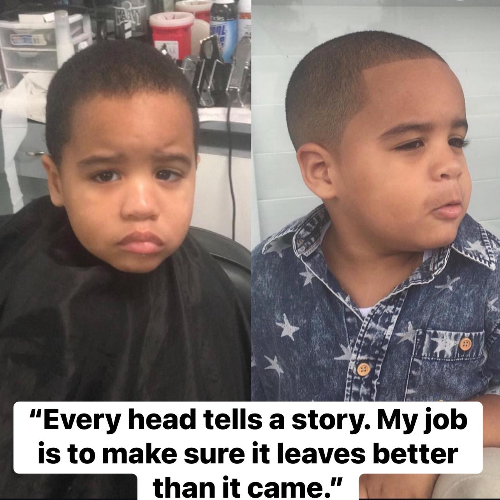
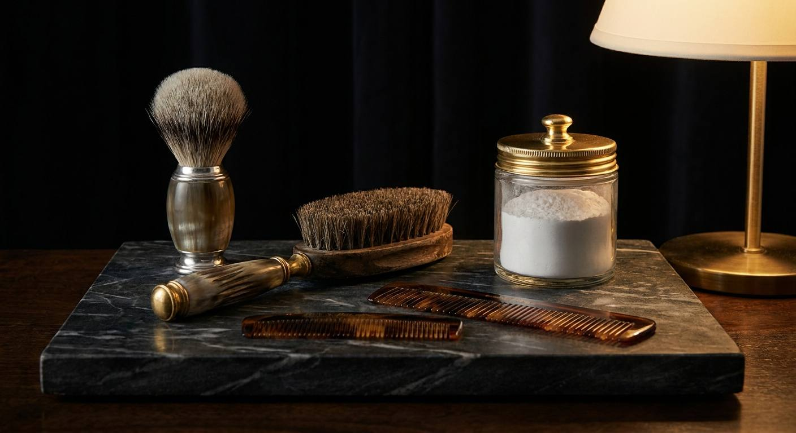

Haircut
Consultation, cut, and finish. Both barbers cut short styles above the shoulders; Darienne also cuts long hair below the shoulders.
Cuts, fades, shape-ups, beards, kids, long hair, color, and hot-towel finishes on N. Nebraska Ave in North Tampa, 33604. Two barbers, two menus.

Consultation, cut, finish. A fade — low, mid, high, or skin — a taper, or a scissor cut are all just the haircut; you settle the shape in the consultation.
Some cuts here also include a post-cut wash and a steamed-towel neck shave; each barber’s booking page lists what theirs includes. Shampoo wash and scalp treatment can be added on.
Each barber sets and publishes their own prices on their own booking page.
Consultation, cut, and finish. Both barbers cut short styles above the shoulders; Darienne also cuts long hair below the shoulders.
Cuts for kids under 12. Google flags the shop Good for kids.
Beard shaped, thinned, and edged. Darienne finishes stubble with a foil shaver.
Line-up and edge work between full cuts.
Scissor-only cut, no clippers.

Studio still lifes above — illustrations of the trade, not photos of this shop.
Full cut and beard in one sitting.
Hot-towel neck shave. Included with Darienne’s haircut service.
Eyebrow shaping; ear, nose, and brow waxing.
Scalp treatment or a 10-minute scalp massage.
Wash and rinse, on its own or added to a cut.
Natural dimension color blend for gray coverage with natural depth.
Add-on facial: deep purification, exfoliation, detox, hydration, moisture seal.
Yes. Both barbers list kids’ cuts, and Google flags the shop Good for kids.
Families are a regular part of the room, not an exception. Both barbers book kids’ cuts, and the time each one sets aside is on their own booking pages.
Yes. The shop cuts long hair below the shoulders and short styles above the shoulders, and does natural dimension color blending for gray coverage. Those cuts include a consultation, a post-cut wash, and a steamed-towel neck shave. See which barber takes them.
Yes. Beard only, shape-up plus beard, and haircut plus beard are all on the menu. A beard clean-up is thinned and shaped, edges and lines cleaned, and a foil shaver taken over the stubble; a steamed-towel neck shave comes with a haircut. Both menus show who books which.
Yes. Eyebrow shaping and ear, nose, and brow waxing. Scalp treatment, a 10-minute scalp massage, and an add-on facial — purify, exfoliate, detox, hydrate, seal.
Each barber sets and publishes their own prices, so the current price for every service is on your barber’s booking page. Gio’s is on The Cut and Darienne’s is on GlossGenius, and you see the price before you confirm. See what each barber cuts and open their menu.